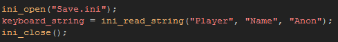
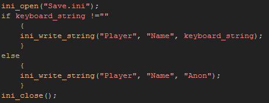

Tutorial
Page 5 of 11
Saving Strings
We have now used the ini files to store the state of the sound and music buttons as real numbers, but you can also store strings to ini files too, so let's get our player to input their name and store that for future use...
Open the object called obj_name_Control and in the create event add the following:

This checks the ini file for a name and if none is found it returns the default value of "Anon". Next we want to store any player input to the file, but unlike previous buttons where we store the information at the
same time as it is entered, we only want to save when the player has definitely finished so we are going to use the room end event (this is found in the other section of the event list). Go ahead
and add that event now to the object then open up a code box and add the following:

Here we are checking the string to make sure that it actually contains characters, and if it does it is saved to the ini, and if it does not then we save the string "Anon" to the ini instead. Note that both the saving and
the loading use different functions to all the previous codes: ini_write_string and ini_read_string. This is important to note as trying to read a real with these functions will cause an error (as will
trying to read a string with ini_read_real).
Click on the Next button to go to the next page of the tutorial.